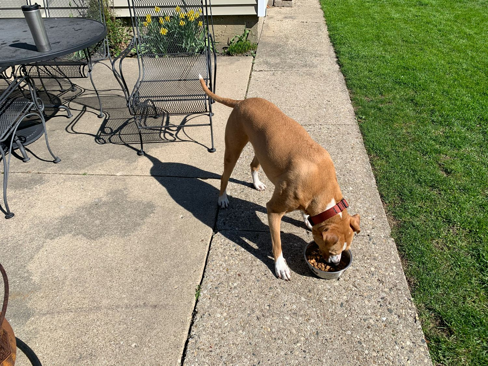
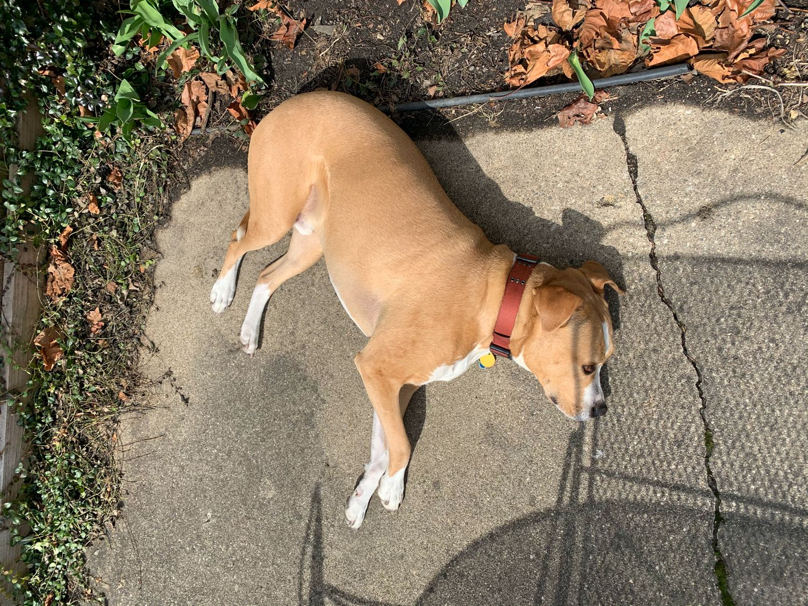
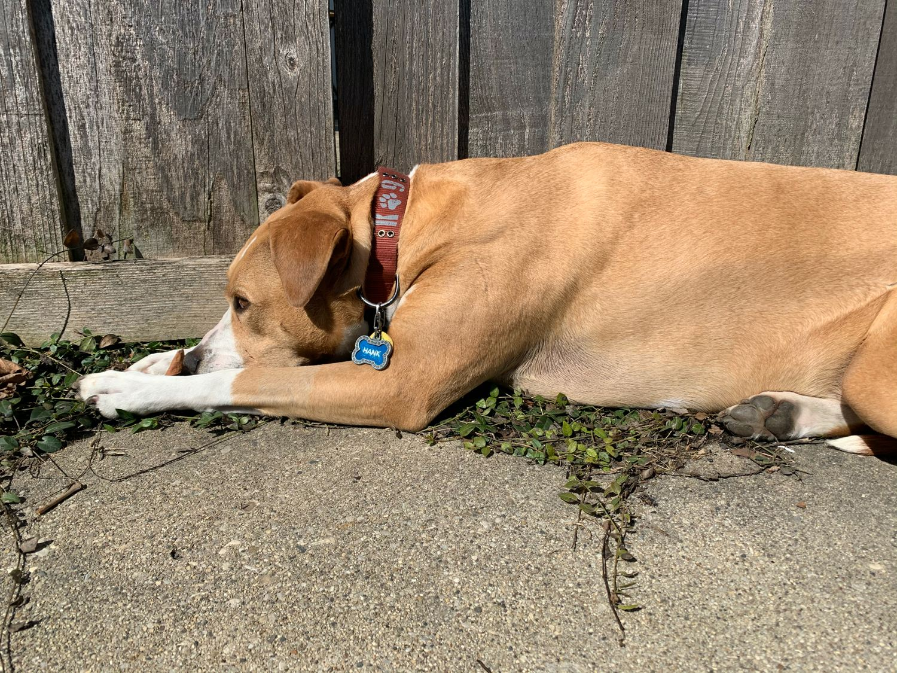
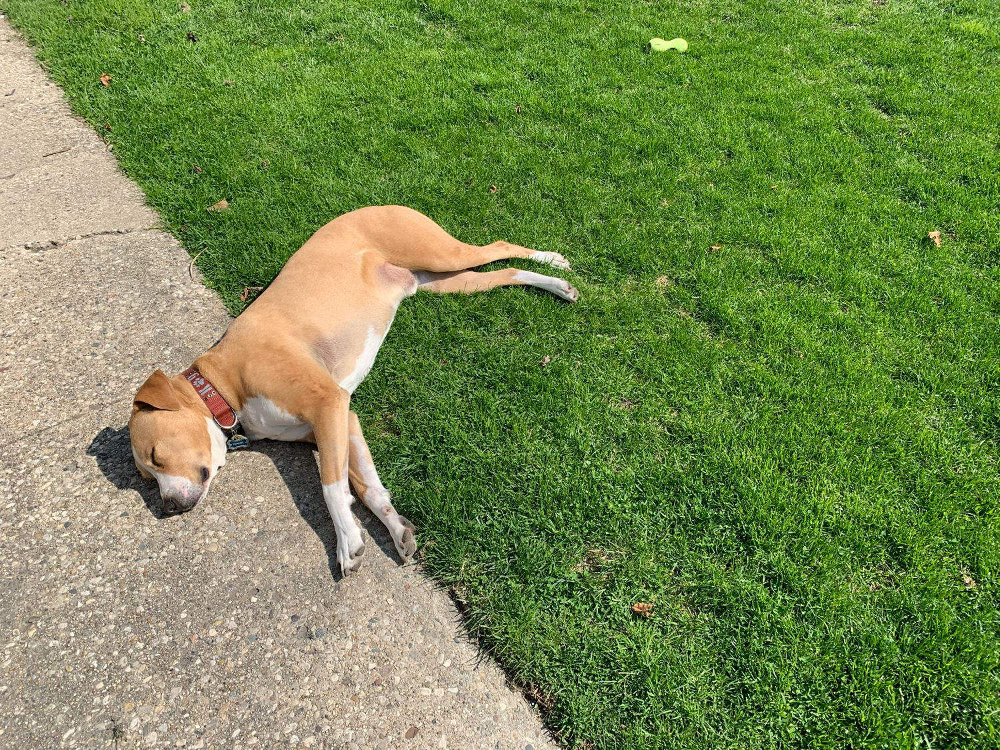
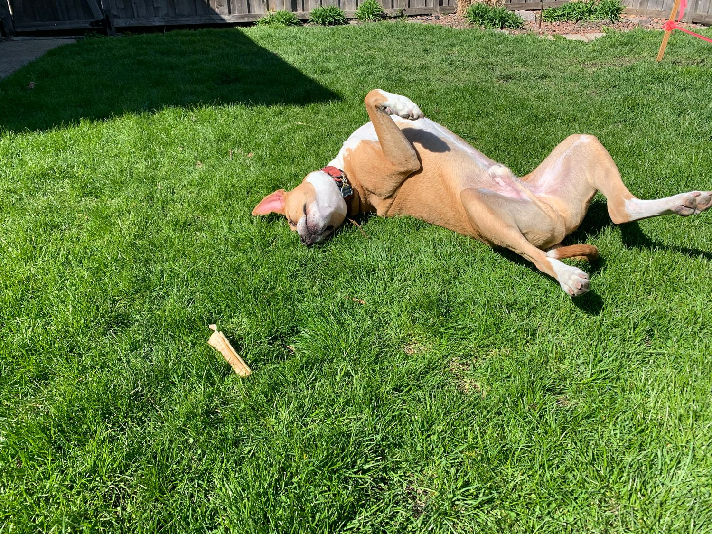

Hank’s Life in Quarantine
-
 Hank demands his breakfast be served outdoors each morning. -
 Breakfast is usually followed by a snooze on the patio. -
 Alternatively, the morning nap can be taken next to a warm, sunlit fence. -
 By the afternoon, Hank is well into his nap-heavy quarantine lifestyle. -
 After chasing his toys around the yard, it’s time to get comfy for another nap.